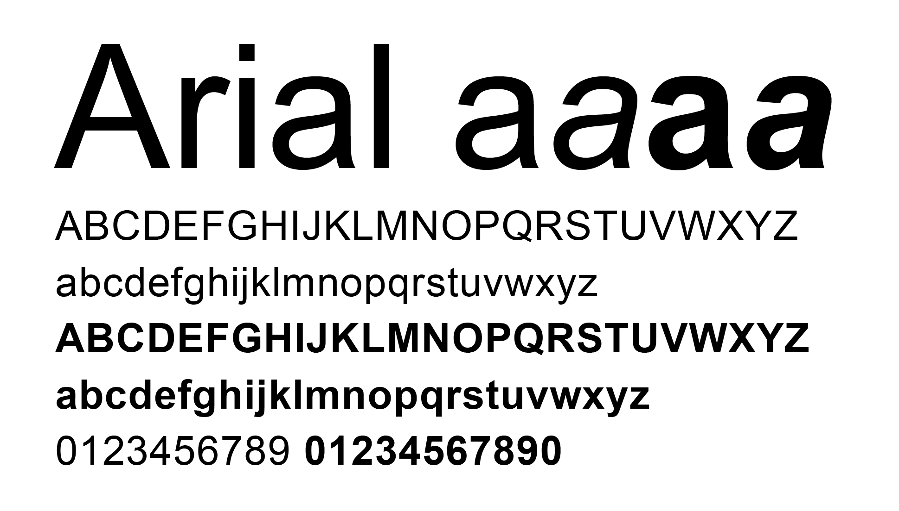

Arial, sometimes marketed or displayed in software as Arial MT, is a sans-serif typeface and set of computer fonts in the neo-grotesque style. Fonts from the Arial family are packaged with all versions of Microsoft Windows from Windows 3.1 onwards, some other Microsoft software applications,[2] Apple's macOS[3] and many PostScript 3 computer printers.[4] The typeface was designed in 1982, by Robin Nicholas and Patricia Saunders, for Monotype Typography.[5] It was created to be metrically identical to the popular typeface Helvetica, with all character widths identical, so that a document designed in Helvetica could be displayed and printed correctly without having to pay for a Helvetica license.
The Arial typeface comprises many styles: Regular, Italic, Medium, Medium Italic, Bold, Bold Italic, Black, Black Italic, Extra Bold, Extra Bold Italic, Light, Light Italic, Narrow, Narrow Italic, Narrow Bold, Narrow Bold Italic, Condensed, Light Condensed, Bold Condensed, and Extra Bold Condensed. The extended Arial type family includes more styles: Rounded (Light, Regular, Bold, Extra Bold); Monospaced (Regular, Oblique, Bold, Bold Oblique). Many of these have been issued in multiple font configurations with different degrees of language support. The most widely used and bundled Arial fonts are Arial Regular, Italic, Bold, and Bold Italic; the same styles of Arial Narrow; and Arial Black. More recently, Arial Rounded has also been widely bundled.
